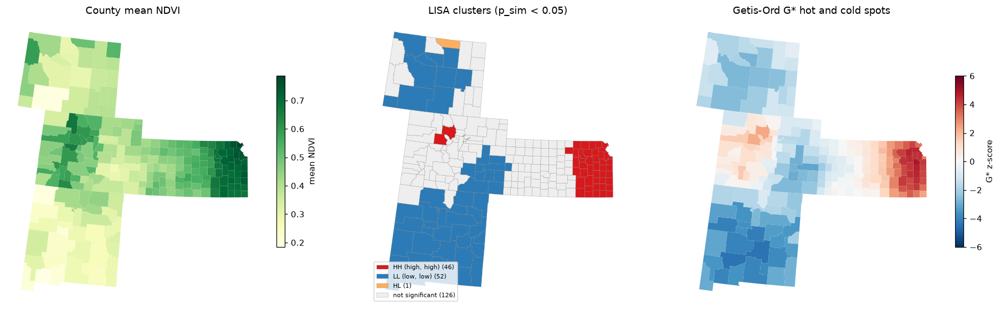
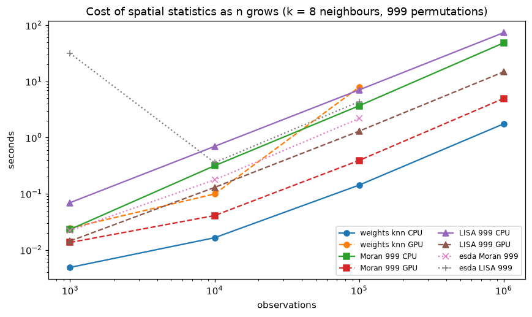
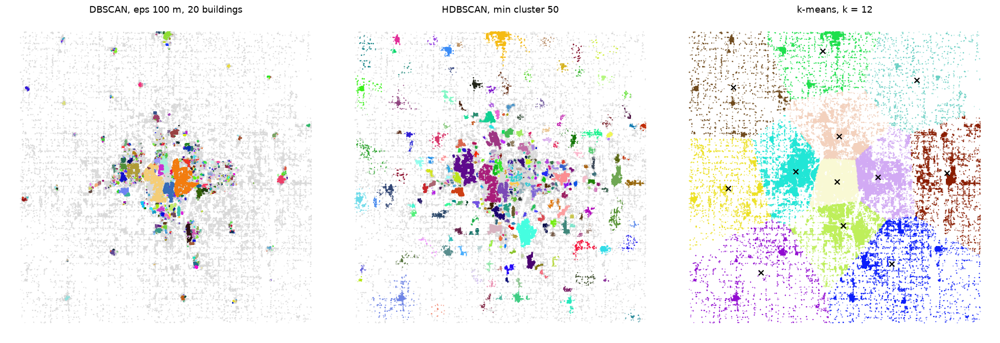
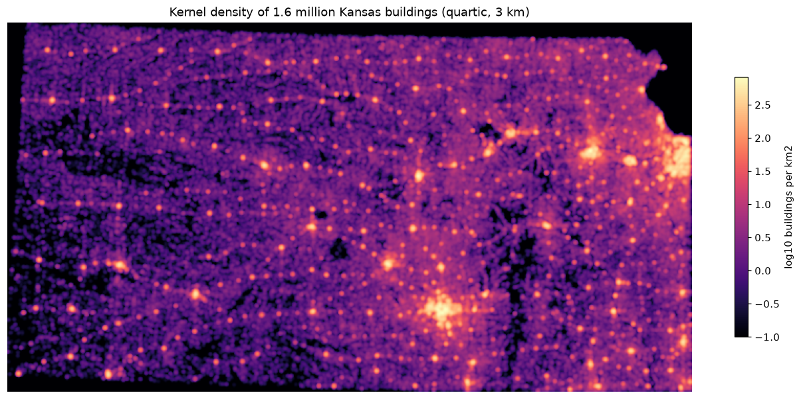

Spatial Weights, Autocorrelation, Hot Spots and Clustering for Large Data
Spatial statistics ask how values relate to the values around them. Moran’s I, local indicators of spatial association (LISA) and Getis-Ord hot spots are routine for a few hundred counties, but their cost grows quickly: every observation needs its neighbours, and significance comes from 999 random permutations of the data. With a million building footprints, a naive implementation runs for hours. This notebook computes spatial weights, global and local autocorrelation, hot spots, density-based clusters and kernel density surfaces with geolattice.distributed.analysis, checks every statistic against PySAL’s esda, and measures how the cost grows from a thousand to a million observations on the CPU and on the GPU.
Overview
Why spatial statistics get expensive
Step
Naive cost
What makes it tractable
Spatial weights
compare every pair: n^2
k-nearest neighbours with a KD-tree, contiguity with a spatial join: about n log n
Global statistic (Moran’s I)
one sparse product z' W z
cheap: proportional to the number of neighbour pairs
999 permutations of a global statistic
999 sparse products
batch the permutations as columns of one matrix: a few sparse matrix products
Local statistics (LISA, G*) with permutations
999 permutations for each of n observations
conditional permutation with shared random draws, computed in blocks
Spatial weights
A weights matrix W lists, for each observation, its neighbours: polygons that share an edge (rook) or a point (queen), the k nearest points (knn), or all points within a distance (distance band, binary or inverse distance). It is stored sparse: a million observations with 8 neighbours each need 8 million entries, not 10^12. Row standardisation divides each row by its sum, so the spatial lag W y is the mean of the neighbours.
Global and local statistics
Moran’s I: I = (n / S0) (z' W z) / (z' z), with z the deviations from the mean. Positive when similar values cluster.
Geary’s C: based on squared differences between neighbours; below 1 means positive autocorrelation.
Local Moran’s I (LISA): I_i = z_i (W z)_i / m2, one value per observation, with quadrants HH (high among high), LL, HL and LH.
Getis-Ord G*: the share of the total in each neighbourhood (including the observation itself), as a z-score: positive for hot spots, negative for cold spots.
Inference compares the observed statistic with its distribution under random permutations of the values (the pseudo p-value p_sim), or with a normal approximation.
Clustering points
DBSCAN groups points that have at least min_samples neighbours within eps; the rest is noise. One distance scale for all clusters.
HDBSCAN builds DBSCAN for every eps at once and keeps the most stable clusters; it finds dense and sparse clusters together.
k-means splits points into k groups around centres; every point belongs to a group.
Kernel density estimation (KDE) spreads each point over a smooth kernel and sums them on a grid.
GlobalResult with statistic, expectation, variance, z_norm, p_norm, p_sim
batched permutations with NumPy / CuPy sparse products
local_morans, getis_ord_local
DataFrame with one row per observation
conditional permutations in blocks, NumPy / CuPy
dbscan, hdbscan, kmeans
cluster labels (and centres)
scikit-learn / cuML
kde(points, like, bandwidth=)
density surface on the grid of like
chunk by chunk, NumPy / CuPy
Weights has row_standardize(), binary(), cardinalities, islands, to_libpysal() and to_gpu(). Statistics equal esda’s for the same weights; permutation p-values agree in distribution (the random draws differ).
Learning objectives
Explain why spatial statistics scale badly without sparse weights and batched permutations.
Build queen, rook and k-nearest-neighbour weights and compare them with libpysal.
Compute Moran’s I, Geary’s C, LISA and G* and check them against esda.
Measure how the cost grows from 10^3 to 10^6 observations on CPU and GPU.
Cluster building centroids with DBSCAN, HDBSCAN and k-means, and compare scikit-learn with cuML.
Compute a kernel density surface of 1.6 million buildings.
Data
Dataset
Content
Great Plains counties
225 polygons; mean NDVI of each from the 90 m raster (pdist.zonal_stats)
Kansas building footprints
1.6 million polygons; centroids and footprint areas
Contents
Setup
Weights for counties
Global autocorrelation of county NDVI
Local statistics: LISA clusters and hot spots
From a thousand to a million observations
Settlements from building centroids
Building density surface
Summary and exercises
Setup
Code
import warnings # warning controlwarnings.filterwarnings("ignore") # hide routine library warningsimport os # environment and CPU countimport time # wall-clock timingfrom pathlib import Path # file pathsimport matplotlib.pyplot as plt # figuresimport numpy as np # arraysimport pandas as pd # tablesimport geopandas as gpd # vector dataimport xarray as xr # labelled rastersimport geolattice # GeoLatticeimport geolattice.distributed as pdist # distributed and GPU spatial computingimport dist_data as dd # chapter helper: paths, cached downloads, timersplt.rcParams.update({"figure.dpi": 110}) # figure resolutionpd.set_option("display.width", 140) # wider printed tablesOUT = Path("outputs") # results and scratch files written by this chapterOUT.mkdir(exist_ok=True) # create it if neededcaps = pdist.capabilities() # engines and GPUs on this machineprint("GeoLattice", geolattice.__version__, "|", os.cpu_count(), "CPU cores |", caps["gpus"], "GPU(s)", # versionsf"({caps.get('gpu_memory_total', 0) /1e9:.0f} GB)"if caps["gpus"] else"") # GPU memoryimport esda # PySAL exploratory spatial data analysis, the referenceimport libpysal # PySAL weightsfrom sklearn.metrics import adjusted_rand_score # agreement of two clusteringsdef sync(): # wait for queued GPU work so timings are realif caps["gpus"]: # only with a GPUimport cupy as cp # GPU arrays cp.cuda.Device().synchronize() # block until donedef timed(fn): # wall time and result of one call t = time.perf_counter(); out = fn(); sync();return time.perf_counter() - t, out # time it
Queen and rook contiguity for the 225 Great Plains counties come from a partitioned spatial join with the touches predicate (rook keeps pairs that share a boundary segment, not just a point). libpysal computes the same from the polygons’ shared vertices.
Code
counties = dd.gp_counties() # 225 counties, EPSG:5070wq = pdist.analysis.weights(counties, "queen") # queen contiguity, row-standardisedwr = pdist.analysis.weights(counties, "rook") # rook contiguitywk = pdist.analysis.weights(counties, "knn", k=6) # 6 nearest centroidslq = libpysal.weights.Queen.from_dataframe(counties, use_index=False) # the referencelr = libpysal.weights.Rook.from_dataframe(counties, use_index=False) # the referencesame =lambda w, l: (w.binary().sparse != l.sparse).nnz ==0# identical neighbour sets?print(f"queen: mean {wq.cardinalities.mean():.2f} neighbours, islands {len(wq.islands)}, same as libpysal: {same(wq, lq)}") # queenprint(f"rook: mean {wr.cardinalities.mean():.2f} neighbours, same as libpysal: {same(wr, lr)}") # rookprint(f"knn: {wk.cardinalities.min()} to {wk.cardinalities.max()} neighbours, {wk.sparse.nnz} entries") # knn
queen: mean 5.39 neighbours, islands 0, same as libpysal: True
rook: mean 5.19 neighbours, same as libpysal: True
knn: 6 to 6 neighbours, 1350 entries
GeoLattice and libpysal find the same neighbours. Queen counties have one more neighbour on average than rook counties: the corner contacts of the township and range grid, where four counties meet at a point.
Global autocorrelation of county NDVI
The variable is each county’s mean NDVI, from pdist.zonal_stats on the 262 million pixel NDVI raster.
Code
ndvi = pdist.zonal_stats(counties, dd.gp_raster("ndvi"), stats=["mean"])["mean"].values # county mean NDVIwl = wq.to_libpysal() # the same weights as a libpysal Wwl.transform ="r"# row-standardised, as wqmi = pdist.analysis.morans_i(ndvi, wq, permutations=999, seed=0) # GeoLatticeref = esda.Moran(ndvi, wl, permutations=999) # esdagc = pdist.analysis.gearys_c(ndvi, wq, permutations=999, seed=0) # GeoLattice Gearygref = esda.Geary(ndvi, wl, permutations=999) # esda Gearypd.DataFrame({"GeoLattice": [mi.statistic, mi.expected, mi.variance_norm, mi.z_norm, mi.p_sim, gc.statistic, gc.z_norm, gc.p_sim], # ours"esda": [ref.I, ref.EI, ref.VI_norm, ref.z_norm, ref.p_sim, gref.C, gref.z_rand, gref.p_sim]}, # theirs (Geary z under randomisation) index=["Moran I", "E[I]", "Var[I] (normal)", "z (normal)", "p_sim", "Geary C", "Geary z (randomisation)", "Geary p_sim"]).round(5) # table
GeoLattice
esda
Moran I
0.86805
0.86805
E[I]
-0.00446
-0.00446
Var[I] (normal)
0.00171
0.00171
z (normal)
21.11459
21.11459
p_sim
0.00100
0.00100
Geary C
0.13319
0.13319
Geary z (randomisation)
-20.36067
-20.36067
Geary p_sim
0.00100
0.00100
The statistics, their expectations, variances and z-scores are identical; the permutation p-values are both the smallest possible with 999 permutations (0.001), because no permutation came near the observed value. County NDVI is strongly autocorrelated (I near 0.9): the gradient from the humid east to the dry west dominates.
Local statistics: LISA clusters and hot spots
Code
lisa = pdist.analysis.local_morans(ndvi, wq, permutations=999, seed=0) # LISAlref = esda.Moran_Local(ndvi, wl, permutations=999, seed=0) # esdag = pdist.analysis.getis_ord_local(ndvi, wq, star=True) # G*gref = esda.G_Local(ndvi, wq.binary().to_libpysal(), transform="B", star=True, permutations=0) # esda G* with binary weights, as GeoLatticeprint("LISA Is equal to esda:", np.allclose(lisa.Is, lref.Is), "| quadrants equal:", bool((lisa.q.values == lref.q).all())) # checkprint("G* z-scores equal to esda:", np.allclose(g.Zs, gref.Zs)) # checkprint(f"significant LISA (p_sim < 0.05): GeoLattice {int((lisa.p_sim <0.05).sum())}, esda {int((lref.p_sim <0.05).sum())}") # inference
LISA Is equal to esda: True | quadrants equal: True
G* z-scores equal to esda: True
significant LISA (p_sim < 0.05): GeoLattice 99, esda 94
Code
lab = {1: "HH (high, high)", 2: "LH", 3: "LL (low, low)", 4: "HL"} # quadrant namescounties["ndvi"] = ndvi # county mean NDVIcounties["lisa"] = np.where(lisa.p_sim <0.05, lisa.q.map(lab), "not significant") # significant quadrantscounties["gstar"] = g.Zs.values # hot spot z-scoresfig, ax = plt.subplots(1, 3, figsize=(17, 5.2)) # three mapscounties.plot("ndvi", ax=ax[0], cmap="YlGn", legend=True, legend_kwds={"shrink": 0.6, "label": "mean NDVI"}) # variablecolors = {"HH (high, high)": "#d7191c", "LL (low, low)": "#2c7bb6", "LH": "#abd9e9", "HL": "#fdae61", "not significant": "#eeeeee"} # palettefor k, v in colors.items(): # one layer per class sub = counties[counties.lisa == k] # its countiesiflen(sub): # draw if any sub.plot(ax=ax[1], color=v, edgecolor="grey", linewidth=0.2, label=f"{k} ({len(sub)})") # mapax[1].legend(fontsize=7, loc="lower left") # legendcounties.plot("gstar", ax=ax[2], cmap="RdBu_r", vmin=-6, vmax=6, legend=True, legend_kwds={"shrink": 0.6, "label": "G* z-score"}) # hot spotsfor a, t inzip(ax, ["County mean NDVI", "LISA clusters (p_sim < 0.05)", "Getis-Ord G* hot and cold spots"]): # titles a.set_title(t); a.set_axis_off() # labelsplt.tight_layout(); plt.show() # draw

The local values equal esda’s; the counts of significant counties differ slightly because the permutations use different random draws. Eastern Kansas forms a high-high cluster and hot spot of vegetation, joined by a small high-high cluster of forested counties in the Colorado mountains. New Mexico, most of Wyoming and the dry plains of south-eastern Colorado form low-low clusters and cold spots.
From a thousand to a million observations
The same statistics on Kansas buildings: the variable is the logarithm of footprint area, the weights are the 8 nearest neighbours of each building’s representative point. Samples of 10^3 to 10^6 buildings show how each step scales on the CPU and the GPU, with esda for comparison where it finishes in reasonable time.
Code
bld = pdist.vector.to_crs(dd.kansas_buildings(), 5070) # 1.6 million buildings in metresbld["log_area"] = np.log(pdist.vector.area(bld)) # log footprint areapts = bld.set_geometry(bld.geometry.representative_point()) # one point per buildingrows = [] # timingsfor n in [1_000, 10_000, 100_000, 1_000_000]: # sample sizes s = pts.sample(n, random_state=0) # random sample y = s.log_area.values # the variable r = {"n": n} # one row r["weights knn CPU"], w = timed(lambda: pdist.analysis.weights(s, "knn", k=8, compute="cpu")) # KD-treeif caps["gpus"] and n <=100_000: # GPU knn is brute force: n x n distances, so only up to 10^5 r["weights knn GPU"], _ = timed(lambda: pdist.analysis.weights(s, "knn", k=8, compute="gpu")) # brute force r["Moran 999 CPU"], m_c = timed(lambda: pdist.analysis.morans_i(y, w, permutations=999, seed=0, compute="cpu")) # batched permutationsif caps["gpus"]: # GPU Moran r["Moran 999 GPU"], m_g = timed(lambda: pdist.analysis.morans_i(y, w, permutations=999, seed=0, compute="gpu")) # on the GPU r["LISA 999 CPU"], _ = timed(lambda: pdist.analysis.local_morans(y, w, permutations=999, seed=0, compute="cpu")) # localif caps["gpus"]: # GPU LISA r["LISA 999 GPU"], _ = timed(lambda: pdist.analysis.local_morans(y, w, permutations=999, seed=0, compute="gpu")) # local on GPUif n <=100_000: # esda for the smaller samples wl = w.to_libpysal(); wl.transform ="r"# same weights r["esda Moran 999"], e = timed(lambda: esda.Moran(y, wl, permutations=999)) # reference r["esda LISA 999"], _ = timed(lambda: esda.Moran_Local(y, wl, permutations=999, n_jobs=-1, seed=0)) # reference r["I equals esda"] =bool(np.isclose(m_c.statistic, e.I)) # check r["Moran I"] = m_c.statistic # the statistic rows.append(r) # keepscale = pd.DataFrame(rows).set_index("n") # tablescale.round(3) # show
weights knn CPU
weights knn GPU
Moran 999 CPU
Moran 999 GPU
LISA 999 CPU
LISA 999 GPU
esda Moran 999
esda LISA 999
I equals esda
Moran I
n
1000
0.005
0.024
0.023
0.014
0.069
0.014
0.022
31.623
True
0.107
10000
0.016
0.099
0.316
0.041
0.698
0.130
0.177
0.358
True
0.100
100000
0.142
7.869
3.682
0.392
7.055
1.302
2.185
4.363
True
0.169
1000000
1.754
NaN
48.478
4.967
73.707
14.789
NaN
NaN
NaN
0.246
Code
fig, ax = plt.subplots(figsize=(8, 4.8)) # one panelfor col, style in [("weights knn CPU", "o-"), ("weights knn GPU", "o--"), ("Moran 999 CPU", "s-"), ("Moran 999 GPU", "s--"), ("LISA 999 CPU", "^-"), # series ("LISA 999 GPU", "^--"), ("esda Moran 999", "x:"), ("esda LISA 999", "+:")]: # esdaif col in scale: # present on this machine ax.loglog(scale.index, scale[col], style, label=col) # time against nax.set_xlabel("observations"); ax.set_ylabel("seconds"); ax.legend(fontsize=8, ncol=2) # labelsax.set_title("Cost of spatial statistics as n grows (k = 8 neighbours, 999 permutations)"); plt.tight_layout(); plt.show() # draw

All costs grow roughly linearly with n, which is what sparse weights and batched permutations buy. The exception is the GPU’s brute-force nearest-neighbour search, which compares every pair and grows with n^2; it was run only up to 10^5 points, and the KD-tree is the right tool beyond that. On the CPU, GeoLattice’s batched permutations were somewhat slower than esda, whose permutation loops are compiled with numba (esda’s very first LISA call, at 10^3, includes about half a minute of that compilation). On the GPU the same batched algorithm was about ten times faster than the CPU for Moran’s I and about five times faster for LISA, and it finished the million-building case (999 permutations, 8 neighbours each) in seconds. The statistic itself agreed with esda at every size where esda was run. Building sizes are positively but weakly autocorrelated (I of 0.1 to 0.25, higher in the denser samples): neighbouring buildings tend to be of similar size, as in subdivisions, farmsteads and industrial parks.
Settlements from building centroids
Clusters of buildings are settlements. DBSCAN with eps = 100 m and 20 buildings finds compact built-up areas; HDBSCAN adapts to varying density. The 270,000 buildings of the Wichita area are clustered on the CPU (scikit-learn) and on the GPU (cuML), and the two labelings compared with the adjusted Rand index (1 = identical partitions).
271,988 buildings
[2026-11-24 09:06:37.421] [CUML] [info] Batch size limited by the chosen integer type (4 bytes). 9855 -> 7895. Using the larger integer type might result in better performance
DBSCAN CPU vs GPU adjusted Rand index: 1.0
HDBSCAN CPU vs GPU adjusted Rand index: 0.7093
DBSCAN: 670 clusters, 33.2% noise
HDBSCAN: 324 clusters, 26.4% noise
seconds
DBSCAN CPU
0.542
DBSCAN GPU
25.137
HDBSCAN CPU
124.958
HDBSCAN GPU
7.073
k-means CPU
2.234
k-means GPU
1.553
Code
fig, ax = plt.subplots(1, 3, figsize=(18, 6)) # three mapsrng = np.random.default_rng(1) # random coloursfor a, lab, t in [(ax[0], db_c, "DBSCAN, eps 100 m, 20 buildings"), (ax[1], hd_c, "HDBSCAN, min cluster 50"), (ax[2], km_c, "k-means, k = 12")]: # panels cols = rng.random((int(lab.max()) +2, 3)) # one colour per cluster c = np.where(lab.values[:, None] <0, 0.85, cols[lab.values]) # grey for noise a.scatter(area.geometry.x, area.geometry.y, s=0.05, c=c) # buildings a.set_title(t); a.set_aspect("equal"); a.set_axis_off() # labelsax[2].scatter(cen[:, 0], cen[:, 1], marker="x", color="k", s=40) # k-means centresplt.tight_layout(); plt.show() # draw

DBSCAN separates Wichita and its suburbs from the surrounding small towns and farmsteads (grey noise). HDBSCAN finds many more, smaller clusters, down to individual subdivisions and villages, because it does not fix one density threshold. k-means is the odd one out: it must put every building in one of 12 groups, so it cuts the city into slices instead of finding settlements.
The two engines behave very differently here, and the reasons matter.
DBSCAN: the CPU and GPU labelings agree, but scikit-learn’s KD-tree beats cuML’s brute-force neighbour search on two-dimensional points by a wide margin. GeoLattice therefore keeps DBSCAN on the CPU unless compute="gpu" is asked for.
HDBSCAN: cuML was about twenty times faster, but its partition differs from scikit-learn’s (an adjusted Rand index of about 0.7 above). Two things were found while writing this notebook. First, on raw EPSG:5070 coordinates (values in the millions of metres) cuML lost precision and agreed with scikit-learn at an index near 0; GeoLattice now subtracts the mean of the coordinates before clustering, which changes nothing mathematically. Second, even on centred coordinates cuML builds its cluster hierarchy differently (it found fewer, larger clusters), while scikit-learn’s result was stable to a 1 cm jitter of the points. cuML’s HDBSCAN is therefore opt-in: use it when speed matters more than matching the reference implementation, and check its clusters.
k-means gave the same groups on both, at similar speed.
Building density surface
pdist.analysis.kde computes a kernel density surface on the grid of a template raster. Each chunk receives only the points within the kernel’s reach, so 1.6 million points and a statewide grid stay manageable. Here a quartic kernel with a 3 km bandwidth on a 1 km grid covering Kansas.
Code
xmin, ymin, xmax, ymax = pts.total_bounds # Kansas extentxs = np.arange(xmin, xmax, 1000) +500; ys = np.arange(ymax, ymin, -1000) -500# 1 km pixel centresgrid = xr.DataArray(np.zeros((len(ys), len(xs)), np.float32), dims=("y", "x"), coords={"y": ys, "x": xs}).rio.write_crs(5070) # templateres = {} # timingsfor c in (["cpu", "gpu"] if caps["gpus"] else ["cpu"]): # both targets res[c], dens = timed(lambda: pdist.analysis.kde(pts, grid, bandwidth=3000, kernel="quartic", compute=c, chunks=(64, 64))) # densityprint(f"compute={c}: {res[c]:.1f} s for {len(pts):,} points on a {grid.shape[0]} x {grid.shape[1]} grid") # timedens_km2 = dens *1e6# buildings per km2print(f"integral {float(dens.sum()) *1e6:,.0f} (should be close to {len(pts):,})") # check: density integrates to the countfig, ax = plt.subplots(figsize=(12, 5.5)) # one mapim = ax.imshow(np.log10(dens_km2 +0.1), extent=dd.extent(dens), cmap="magma") # log densityplt.colorbar(im, ax=ax, shrink=0.7, label="log10 buildings per km2") # scaleax.set_title("Kernel density of 1.6 million Kansas buildings (quartic, 3 km)"); ax.set_axis_off(); plt.tight_layout(); plt.show() # draw
compute=cpu: 23.8 s for 1,605,334 points on a 353 x 652 grid
compute=gpu: 3.2 s for 1,605,334 points on a 353 x 652 grid
integral 1,604,789 (should be close to 1,605,334)

The density integrates to the number of buildings (up to the kernels that spill over the state border), a quick check that the surface is a proper density. The towns along the highways and rivers, Wichita, Topeka, Lawrence and the Kansas City suburbs stand out against the sparse west.
Summary and exercises
Sparse weights, batched global permutations and blocked conditional permutations keep spatial statistics close to linear in the number of observations.
GeoLattice’s contiguity weights matched libpysal’s, and Moran’s I, Geary’s C, LISA and G* matched esda; permutation p-values agree in distribution.
From 10^3 to 10^6 buildings the cost grew roughly linearly. On the CPU esda was somewhat faster; the GPU was five to ten times faster than both and handled a million buildings in seconds.
DBSCAN, HDBSCAN and k-means answer different questions about building clusters. cuML’s HDBSCAN was much faster than scikit-learn’s but found a different partition, so it is opt-in; for 2-D DBSCAN the CPU KD-tree is faster.
A kernel density surface of 1.6 million points was computed chunk by chunk and integrates to the number of points.
Exercises
Repeat the county analysis with rook and knn (k = 4) weights. How much do Moran’s I and the LISA map change?
Compute G* hot spots of building size for the 100,000 building sample and map them for Wichita.
Run DBSCAN with eps of 50, 100 and 200 m. How do the number of settlements and the noise share change?
Compute the KDE with a Gaussian kernel and a 1 km bandwidth on a 250 m grid for Sedgwick County. How do CPU and GPU times change with the bandwidth?